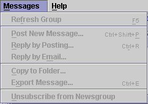
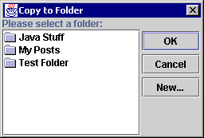

The Messages Menu contains commands for manipulating individual messages in a newsgroup.

| Keyboard Shortcut: | F5 |
| Toolbar Button: |
Forces NewsAgent to connect to the News Server and download any new messages in the current Newsgroup. During the download process, you will not be able to change the current message. The progress bar to the right of the status bar at the bottom of the main window shows how long this process will take.
This menu command is only enabled if you are currently connected to a News Server and a Newsgroup is selected in the folders & servers tree panel.
| Keyboard Shortcut: | Ctrl+Shift+P |
| Toolbar Button: |
Posts a new message to the current Newsgroup. The Message Composer dialogue is displayed. If you wish to reply to a message, you should use the Messages: Reply by Posting menu command instead, as this ensures that other Newsreaders can see which message you are replying to and thread messages properly.
This menu command is only enabled when a Newsgroup is selected in the servers & folders tree panel.
| Keyboard Shortcut: | Ctrl+R |
| Toolbar Button: |
Posts a reply to the currently selected message. The Message Composer dialogue is displayed.
This menu command is only enabled when a Newsgroup is selected in the servers & folders tree panel and a message is selected in the message header list panel.
When you reply to a post, you can quote text from the original post to help clarify what you are commenting on. There are a number of options for configuring the way in which text from the original message is quoted in the Send Tab of the Preferences Dialogue.
| Keyboard Shortcut: | None |
| Toolbar Button: |
Sends a reply to the author of the currently selected message through electronic mail. The Message Composer dialogue is displayed.
This menu command is only enabled when a Newsgroup is selected in the servers & folders tree panel and a message is selected in the message header list panel.
This menu command is currently unimplemented.
| Keyboard Shortcut: | None |
| Toolbar Button: |
Copies a message to a folder. You can copy messages from Newsgroups and from other folders. This command displays the following dialogue:

You should select a folder and press enter or click OK. Clicking Cancel aborts the copy. Clicking New... has the same effect as invoking File: New Folder...
This menu command is only enabled if you are currently connected to a News Server, a Newsgroup is selected in the folders & servers tree panel and a message is currently selected in the message header panel.
In the current version, there is no support for hierarchical folders and drag & drop is not supported. Drag and drop will be added when it becomes part of the (final) release of Java 1.2.
| Keyboard Shortcut: | None |
| Toolbar Button: |
Allows you to export the currently selected message to a text file.
| Keyboard Shortcut: | None |
| Toolbar Button: |
Unsubscribes from the current Newsgroup.
This menu command is only enabled when a Newsgroup is selected in the folders & servers tree panel.